第1章 PyMOLチュートリアル: アルカリホスファターゼの構造を見る
目的
酵素などのタンパク質は、それぞれ固有のアミノ酸配列をもち、それが固有の立体構造に折れたたまります。これにより、アミノ酸配列上では離れていた残基同士が接近し、それらが協同して他の分子と相互作用したり化学反応を触媒したりすることができるようになります。タンパク質を含む生体分子が機能を果たすためには、その立体構造が本質的に重要です。生体分子は、ナノメートル（\( 10^{-9}\ \rm{m} \)）オーダーの微小なものですが、X線結晶構造解析法やNMR法、最近ではクライオ電子顕微鏡などの手法を用いて、その立体構造（分子を構成している各原子の\( xyz \)座標）を決定することができます。それらの構造データは、公共の立体構造データベースに蓄積され、誰もが自由かつ無料で利用できるようになっています。コンピュータを用いると、これらの立体構造データにインターネットを介してアクセスし、さらに分子グラフィックスソフトウェアを用いてその構造を表示することが可能となります。
人間の肉眼では見えない生体分子をこのようにコンピュータ上で可視化することで、その機能に対する理解をいっそう深めることができます。ここでは練習として、加水分解酵素「アルカリホスファターゼ」のアミノ酸配列や立体構造に関するデータをデータベースから取得し、タンパク質の配列－構造－機能の関係を理解してみます。アルカリホスファターゼは、我々の健康診断の時に肝臓の機能を測る指標（ALP）として、生活に関わっているタンパク質です。
それでは早速やっていきましょう。
Protein Data Bank (PDB)にアクセスする
お使いのパソコンにインストールされているウェブブラウザ（Edge, Safari, Google Chrome, Firefoxなど）の検索エンジンに、「PDB」と入れて検索すると、RCSB PDBのホームページが表示されます。
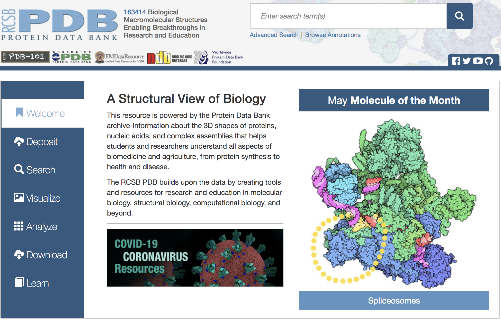画面右上のボックスに「alkaline phosphatase」と入力し，ボックス右のGoボタンを押します。
メニュー左側に現れている「Refinements」の「ORGANISM」に表示されている「Escherichia coli」をクリックして検索ボタン（ルーペマーク）をクリックします。これで大腸菌由来の「alkaline phosphatase」に検索を絞り込むことができます。
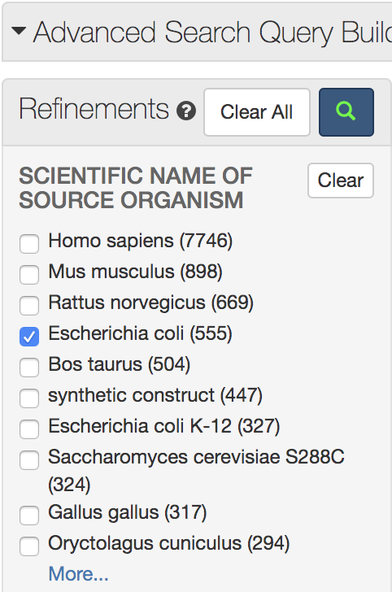右上の「Displaying 25 per page」の「25」を「100」に変更し，表示された結果の中から「1ALK」を探してクリックします（リストの一番下付近にあります）。
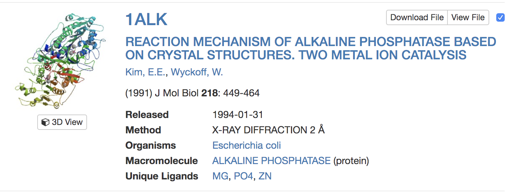PDBの各エントリには、このように4文字の記号（PDB ID）が付けられています。なお、PDBのIDがあらかじめわかっている場合はテキストボックスにPDB IDを入れてGoボタンを押すことでも目的の構造のページに移動することができます。これによって、1ALKエントリの内容が表示されます。
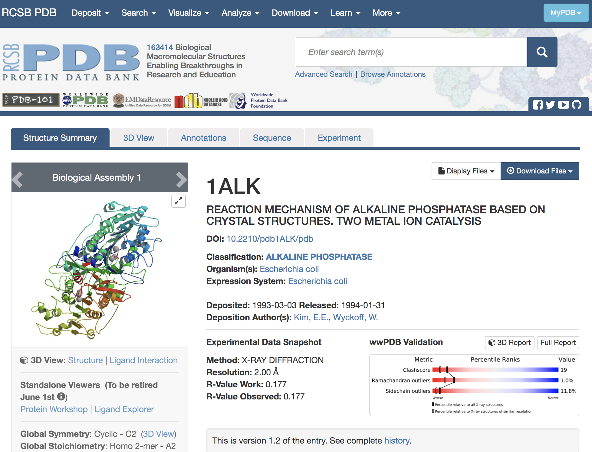最初のページには、このエントリのタイトル、登録日、由来する生物種や立体構造のグラフィックスなどが表示されています。さらに画面上方のタブをクリックすると、このタンパク質に関するさまざまなデータにアクセスできます。現在表示されているのは「Structure Summary」タブの内容です。
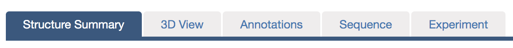このStructure Summaryのタブのページで、以下のデータに注目してみましょう。
「Macromolecules」にはこのエントリのタンパク質の簡単な説明が記載されています。検索条件で指定したとおり、大腸菌（Escherichia coli）のアルカリホスファターゼであり、さらに分子量が94687.01であること、 449残基のアルカリホスファターゼ分子がA、 Bの2本のチェイン（鎖）として含まれていることなどがわかります。

「Small Molecules」にはこのエントリに含まれるタンパク質以外の低分子化合物や金属などの情報が記載されています。リン酸塩(PO4)、亜鉛イオン(ZN)、マグネシウムイオン(MG)が結合していることがわかります。このアルカリホスファターゼは、本来リン酸エステル化合物を加水分解する酵素であり、リン酸塩はこの酵素の阻害剤として結合している無機リン酸です。
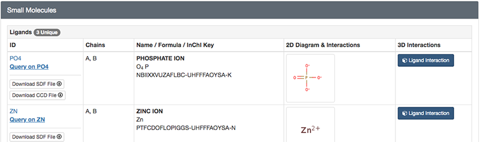 ## PDBデータのダウンロード PDBの構造情報ファイルをダウンロードし、その中身を確認してみましょう。分子の立体構造データの実体は、その分子を構成している各原子の\( xyz \)座標データの集まりです。PDB ID: 1ALKのStructure Summaryのタブに戻って右上のDisplay Filesを左クリックし、さらにPDB Formatを左クリックすると、開かれたタブの中にPDBデータの中身が表示されます。
最初にHEADERレコードやREMARKレコード、SEQRESレコードなどのヘッダ部があり、下方のATOM（あるいはHETATM）レコードに分子を構成する各原子の\( xyz \)座標などが並んでいます。ヘッダ部には、この分子が由来する生物種や文献情報、構造決定方法に関する情報、アミノ酸配列、単量体か多量体か、構造中に含まれる金属や補酵素の情報などが書かれており、先程まで見ていたPDB ID: 1ALKのウェブページ上ではこれらの情報がわかりやすく整形されて表示されています。座標データは、20種類の標準アミノ酸はATOMレコードに、それ以外の基質や金属、修飾アミノ酸などはHETATMレコードに記述されています。1ALKのATOM/HETATMレコードに、タンパク質のAチェイン、 Bチェイン、続いて亜鉛（ZN）、マグネシウム（MG）、リン酸（PO4）、水分子（HOH）の座標データが並んでいることを確認してみましょう。
HEADER: PDB IDやタンパク質の種類，データ登録年月日
TITLE: このデータを得た研究内容の簡単な説明
SOURCE: その分子の由来（遺伝子名，生物種など）
AUTHOR: 著者名
JRNL: 立体構造が発表された文献情報
REMARK: X線結晶解析の解像度やその他のコメントなど
SEQRES: アミノ酸・塩基配列
HET: 標準アミノ酸・塩基以外の金属原子，基質などの情報
HELIX/SHEET/TURN: 2次構造情報
SSBOND: ジスルフィド（S-S）結合
ATOM: 原子座標など
HETATM: アミノ酸やヌクレオチド以外の原子（金属，基質化合物など）の座標など
TER: チェイン（chain, 鎖）の終わり
END: エントリの終わり
なお、構造ファイルのデータフォーマットは、これまで伝統的に用いられてきたPDB formatに代わって、2019年7月1日からはPDBx/mmCIF formatが標準形式として採用されることになっています。このファイル形式は、人間にはわかりにくいがコンピュータで処理しやすい形式になっています。余裕があればこのフォーマットも新規タブで開いてみましょう。
では、大腸菌のアルカリホスファターゼの立体構造データをダウンロードして、手元のコンピュータの中で可視化し、実際の立体構造を見てみましょう。このための可視化ソフトウェアとして、ここでは無料で利用でき、かつ多くの種類のコンピュータ上で動作することができるPyMOLを利用します。
再びRCSB PDBの1ALKのページに戻って、画面右上のDownload Filesを左クリックし、メニューの中のPDB Formatを右クリックして対象をファイルに保存を選択します。
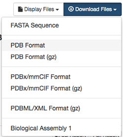ここで、ファイル名を1alk.pdbとします。PDBファイルがダウンロードのフォルダにダウンロードされるので、そこからデスクトップにファイルを移動させます。
PyMOLの起動
それではPyMOLを起動してみましょう。起動の仕方は、お使いのパソコン・macによってやり方が変わります。もしまだPyMOLをインストールしていない場合は、インストール方法を参照してください。
Windows 10の場合
（調査中です）
macOS (バイナリ版)の場合
初心者向けです。バイナリ版をインストールした場合、Finderから[アプリケーション]を選択して中にあるPyMOLをダブルクリックすることで起動できます。
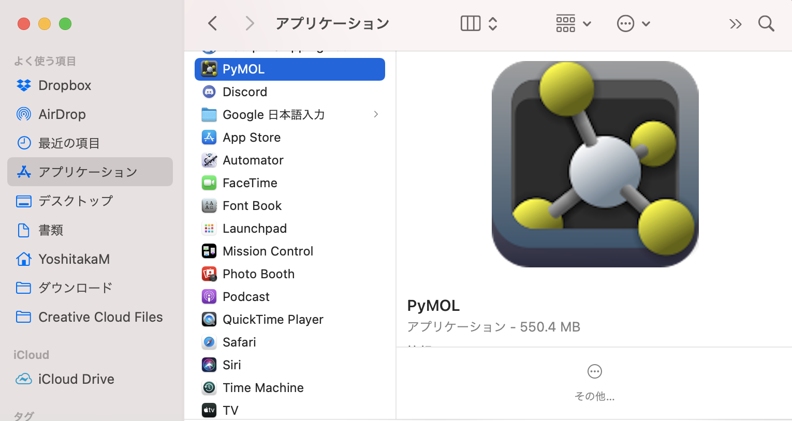macOS（オープンソース版の場合）
ターミナル操作に習熟した上級者向けです。オープンソース版はHomebrewを使うことでインストールできます。（参考：インストール方法）
インストールに完了した後、[アプリケーション]→[ユーティリティ]→[ターミナル]を選択して、pymolと打てば起動します。実用上は pymol > /dev/null 2>&1 & とコマンドを打つ方が便利かもしれません。
Linuxの場合
インストール完了後、ターミナルから pymol と打つことで起動します。
大腸菌由来アルカリホスファターゼのグラフィック表示
PyMOLを起動した後、画面左上にあるFileメニューからOpen...を選び、先程デスクトップに移動させた1alk.pdbファイルを選択します。すると、PyMOL画面の中にPDB ID: 1ALKの大腸菌由来アルカリホスファターゼが表示されます。
このチュートリアルではPyMOLのGUI機能を駆使して、アルカリホスファターゼの2次構造の配置（フォールド）や、リン酸付近の原子・残基の配置などを調べてみます。必要に応じて第2章 PyMOLのGUIの使い方のマウス操作 とMouse Mode: 3-Button Viewing を読みます。マウスで分子をドラッグすることで、分子の回転、平行移動、拡大縮小などが行うことができます。
PyMOLでは、まずマウス(またはselectコマンド)で原子やアミノ酸を選択(select) し、続いて選択した範囲に対する 操作(Action) を指定します。選択された部分はピンクのマーカーで強調されるので、今何が「選択」されているかに常に注意します。また、操作のやり直しはできないので、操作を間違えた場合にはその都度それを上書きする形で表示をやり直します。
チェインごとの色分け
このアルカリホスファターゼがホモ2量体であることをわかりやすく表示するために、Aチェインを緑色（デフォルト）、Bチェインを水色（cyan）で表示してみます。PyMOL右下の画面にSという小さなボタンがあるので、ここを押すと、タンパク質が表示されている画面の上にアミノ酸配列が現れます（参考： 配列の表示について ）。
今表示されたアミノ酸配列の上で、マウスを使ってチェインBをすべて選択します。次に、色の設定を参考にしてチェインBを水色に変更します（参考：色の設定 ）。
※ PyMOLの画面上に存在する入力欄PyMOL> の所（中段上と一番下の2ヶ所に存在しますが、どちらに入力してもOK）で上や下の矢印キーを押すと、それまでに入力したコマンドを再び呼び出すことができます。また左右の矢印キーを使って、以前使ったコマンドを自由に編集できます。同じコマンドを何度も入力するのは面倒なので、上下左右の矢印キーを上手に使いましょう。
二次構造ごとの色分け
この大腸菌アルカリホスファターゼを、今度は二次構造による色分けを使って表示してみます（参考： 色の設定について ）。
オブジェクトパネルにおける1ALKのCのところをクリックし、Colorのメニューのところで、[by ss]にマウスを重ねます。色分けの種類はデフォルトで3種類用意されており、どれを使っても問題ありませんが、ここでは一番上の例（ヘリックス:赤; シート:黄; ループ:緑）のカラーリングで表示してみます。
このように表示されるはずです。
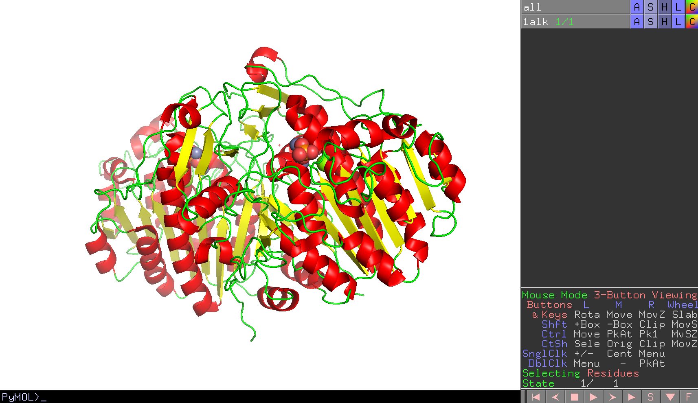ここで、大腸菌アルカリホスファターゼの立体構造のCATHによる分類は、"Alpha Beta 3-Layer(aba) Sandwich"とされています。Cartoon表示で見る角度を調節して、このタンパク質の立体構造がCATHの分類通りにAlpha Betaの3層構造を形成していることを確認してみましょう。
画像の保存
画面に映されているタンパク質を画像ファイルとして保存します。ただし、そのまま保存しようとすると背景が黒のままとなってしまいます。
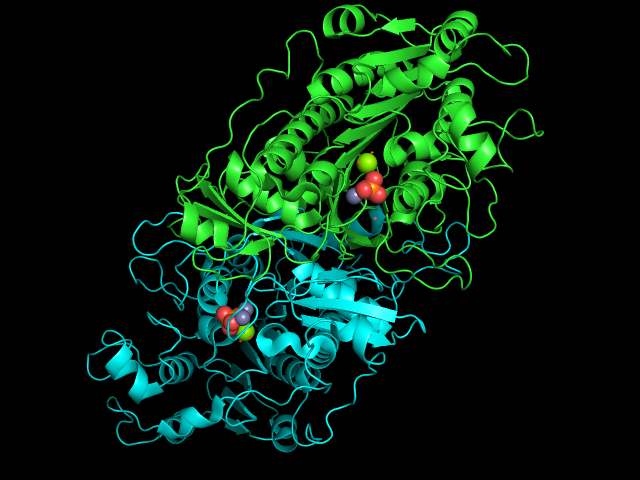これを白背景で出力します。上部のDisplay > Backgroundメニューから、Whiteを選択します。
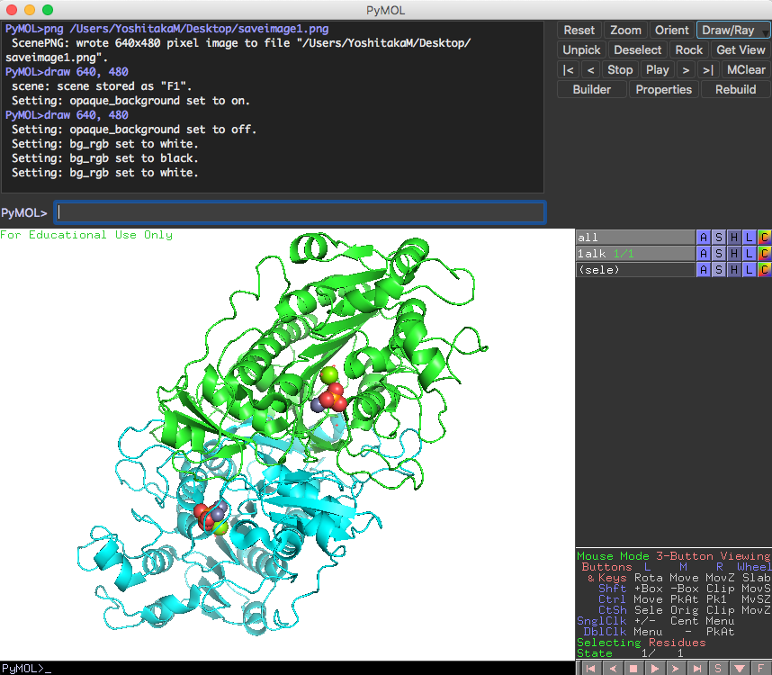この設定の後、PyMOL画面の右上に存在するDraw/Rayボタンを押し、Draw (fast)またはRay (slow)ボタンを押すと、きれいな画像となって表示されます。
問題がなければ、Save Image to Fileボタンを押し、ファイル名を設定して保存しましょう。ちなみに、transparent backgroundにチェックを入れると背景透過画像を生成することができます（ただしRay (slow)を適用した場合のみ）。背景透過処理を行うとレポートやスライドの上で扱いやすくなるので、ぜひ利用しましょう。
その他の詳しい項目については2.7 画像の保存を参照してください。
セッションファイルへの保存
ここまでの作業内容をセッションファイルに保存します。セッションファイルとは、現在のPyMOLの画面の状態をそのまま保存しておくファイルのことです。画面上部にあるFileメニューからSave session as…を選んで名前を指定して保存します(kadai1.pseなど、わかりやすい名前をつけましょう)。（参考：セッションの保存 ）。
保存したセッションファイルはFile > Openメニューから読み込むことができます。
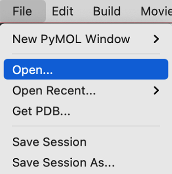すでにタンパク質を他に表示させている状態でセッションファイルを読み込もうとすると下図のようなメッセージが現れますが、今開いている画面と別のPyMOL画面でタンパク質を表示させたい場合は、一番下のOpen in new PyMOL Windowを選択することをおすすめします。
※ （上級者向け）上述のPyMOL> の入力欄にコマンドを入力することでも可能です。デスクトップ上に保存したい場合は、cd ~/DesktopとしてWorking Directoryをデスクトップに設定した後、save kadai1.pseとすることでセッションファイルを保存できます。
リガンド結合部位への注目
ここから、タンパク質内のリン酸や金属が結合している部分に注目してみます。まず、全体構造の中のどこに結合しているかを確認してみます。
- PyMOL内で配列を表示させます。
- 表示された配列のところで、Chain Aの
ZN2つとMG,PO4をすべて選択します。 - 次に、オブジェクトパネルにおいてその選択範囲
(sele)についてStickとSpheresで表示させてみます（→分子構造の表示形式のON/OFF）。
デフォルト設定では、sphere表示で表されるボールがかなり大きくなっているので、ここではいったん小さくしてみます。これはPyMOL >のところにコマンドを打つことで設定できます。
set sphere_scale, 0.4
これで球が小さく表示されました。
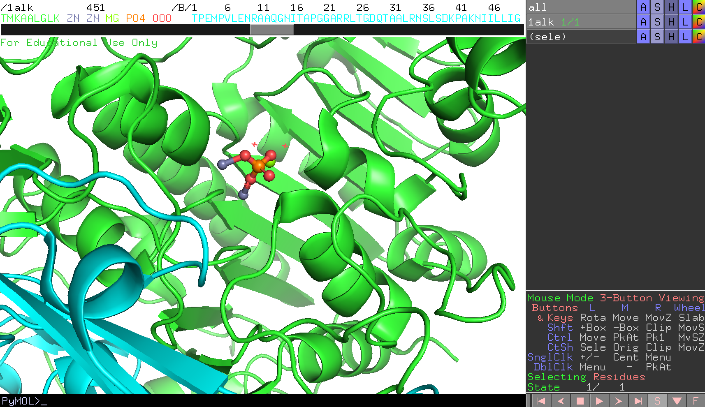ここで、表示をチェインA（A鎖）だけにし、Bチェインはhideで隠します（→分子構造の表示形式のON/OFF）。リン酸や金属は各チェインに1組ずつ結合していることがわかります。
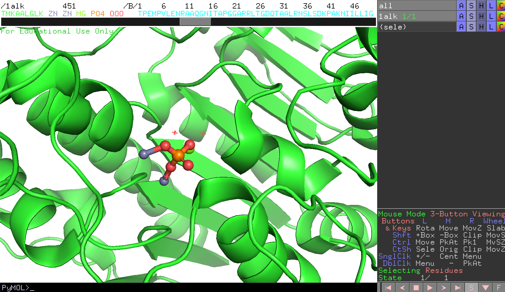チェインAのリン酸(PO4)が画面の中心にくるよう設定してみます。これはこのPO4を選択した上で右クリックを押してメニューを表示させ、centerを選択することでできます。
参考：マウス操作と各モードにおける操作一覧
マウス操作で、画面を拡大して見やすくしておきます。
タンパク質のCartoon表示をオフにします（→分子構造の表示形式のON/OFF）。
チェインAのリン酸から4.6 Å以内にある水分子以外のアミノ酸残基を表示させます。チェインAのリン酸PO4だけが選択された状態で以下のコマンドを打ちます。
select byres resn * within 4.6 of sele
show sticks, sele
ここで、byresは「残基単位での選択」を意味する設定であり、とある残基が1原子でもリン酸から4.6 Åの距離以内に存在するのであれば、その残基をすべて選択するようにしています。その後、2行目のコマンドで選択した範囲をsticksで表示させます（オブジェクトパネルでも可能）
Zn，Mgは原子種ごとの色分け（→色の設定）にします。
リン酸付近にどのようなアミノ酸種が分布しているかを確認するために、先程の選択範囲(sele)について、ラベルの設定でlabel -> residuesを選択します。
PyMOL画面を回転させて、どのアミノ酸がこのリガンド結合部位に存在しているかをすべてメモします。目視で行っても構いませんが、ここではPyMOLがPythonプログラミングで動いているということを利用して、以下のコマンドを入力して確認してみましょう。
コマンド入力欄に以下のコマンドを順次入れていきます（コピー＆ペースト可能）。
# チェインAのリン酸を選択する(残基名がPO4でかつchain Aのものをselectする)
select resn PO4 and chain A
# 現在の選択範囲から4.6Å以内にある分子を、残基単位(byres)ですべて選択する
select byres resn * within 4.6 of sele
# ここで空の配列であるreslistを作成しておく（初期化）
reslist = []
# pymolのiterateコマンドを用いて、選択範囲(sele)に存在するCα炭素(name CA)について
# (residue_id, residue_name)のタプルをreslistに繰り返し加えていく
iterate sele and name CA, reslist.append((resi, resn))
# reslistを表示する
print(reslist)
ここまでうまく入力されていれば、最後に以下のように結果が表示されるはずです。
PyMOL> print(reslist)
[('51', 'ASP'), ('101', 'ASP'), ('102', 'SER'), ('153', 'ASP'), ('166', 'ARG'), ('327', 'ASP'), ('331', 'HIS'), ('369', 'ASP'), ('370', 'HIS'), ('412', 'HIS')]
これはpythonで言うところの、リスト型変数reslistの中にタプル型で（残基番号, 3文字残基名）の組が入っている形になっています。
これをよく生物学の表示で使われるようなMET-1, ASP-2のような表示に変換したい場合は、pythonのprint文を知識を使って例えば以下のようにpythonプログラムを書けばうまく出力することができます。ただし、PyMOLのコマンドラインでpythonプログラムを書く場合はpythonとpython endというブロックの間に挟む必要があります。（参考： https://pymolwiki.org/index.php/Python ）
python
# リスト内のタプルをi, jに代入するfor loop
for i, j in reslist:
# print&format文法を使って"{residue_name}-{residue_id}"の順番で表示する
print("{0}-{1}".format(j, i))
python end
すると、以下のように表示されます。
PyMOL>python end
ASP-51
ASP-101
SER-102
ASP-153
ARG-166
ASP-327
HIS-331
ASP-369
HIS-370
HIS-412
こうすれば目視でやるより書き漏らしがなくて済みますね。
終わったら、再び現在までの作業内容をセッションファイルに保存しておきます。ファイル名はたとえば1alk_active_site.pseなどとしておくと分かりやすくて良いでしょう。
ヒトアルカリホスファターゼとの構造比較
ヒトアルカリホスファターゼも立体構造が解かれ、PDBに登録されている（PDB ID: 1EW2）。大腸菌アルカリホスファターゼとの類似点・相違点を調べてみよう。
ヒトアルカリホスファターゼと大腸菌アルカリホスファターゼのアミノ酸一致度は30%弱である。つまり平均すると10箇所のうち7箇所以上はアミノ酸が異なっていることになります。では、ヒトアルカリホスファターゼは大腸菌アルカリホスファターゼとまったく異なるやり方でリン酸エステル化合物の加水分解を行っているのだろうか？それとも似た反応機構をもっているのでしょうか。立体構造の観点から調べてみましょう。
ヒトアルカリホスファターゼの構造ファイルのダウンロード
まず大腸菌のときと同様に、RCSB PDBから1EW2のPDBファイルをダウンロードします（参考：分子構造のロード）。次に、すでに1ALKの構造を開いているPyMOLの中で、この1EW2の構造ファイルをロードします。しかし、ここで1ALKのときと違いChain Aしか表示されていないことに気付くでしょう。1EW2も1ALKと同様にBiological unitはホモダイマーですが、この構造ファイルには結晶の対称性を考慮してチェイン1本分の座標しか入っていない状態になっています。このような場合はPyMOLの機能を使って、結晶の対称性からもう1本のチェインの座標データを生成することができます。
Biological unitを考慮した分子構造のロードのページを参考に、1EW2の構造を2量体でロードします。1EW2の各チェインは1ew2_0001, 1ew2_0002と表示されることになります。ここで、わかりやすくするために大腸菌のアルカリホスファターゼを緑色に、今開いたヒトアルカリホスファターゼの2量体を水色で表示させておきます。
2つのアルカリホスファターゼの構造の重ね合わせ
では、大腸菌とヒトのアルカリホスファターゼの構造をそれぞれ重ね合わせることで比較してみましょう。ここではPyMOLのsuperという重ね合わせ用のコマンドを使います。
今、画面には1alkと1ew2_0001, 1ew2_0002のオブジェクトが存在しているはずです。ここで、1alkオブジェクトを1ew2_0001オブジェクトに重ね合わせることを以下のコマンドで行います（※1ew2_0001を1alkに、ではないことに注意）。このコマンドは
super 1alk, 1ew2_0001
です。これを行うと、
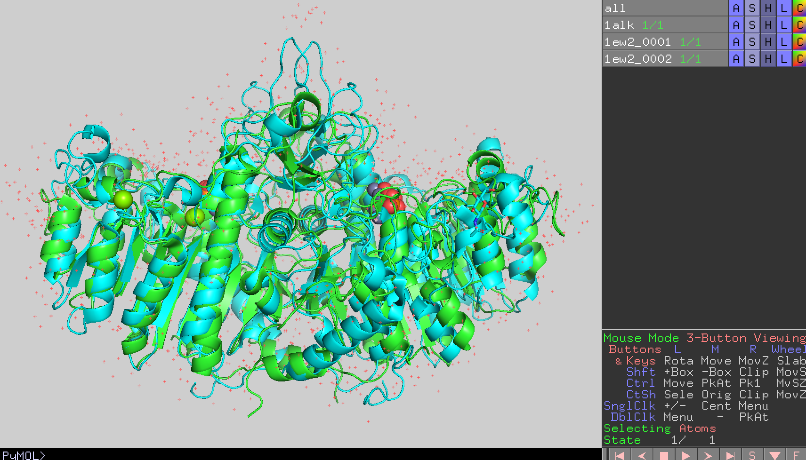図のように大腸菌ホスファターゼとヒトアルカリホスファターゼを重ねることができます（図では背景をグレーにしています）。また、画面上部のPyMOLコンソール画面には2つの構造のRMSD値が表示されます。
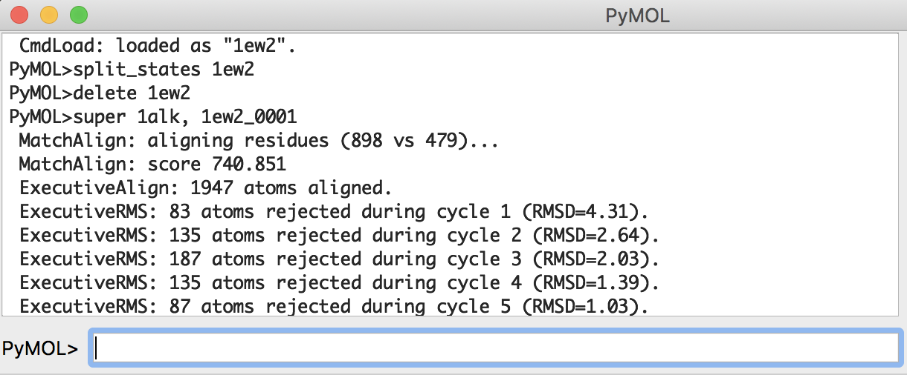PyMOL>super 1alk, 1ew2_0001
MatchAlign: aligning residues (898 vs 479)...
MatchAlign: score 740.851
ExecutiveAlign: 1947 atoms aligned.
ExecutiveRMS: 83 atoms rejected during cycle 1 (RMSD=4.31).
ExecutiveRMS: 135 atoms rejected during cycle 2 (RMSD=2.64).
ExecutiveRMS: 187 atoms rejected during cycle 3 (RMSD=2.03).
ExecutiveRMS: 135 atoms rejected during cycle 4 (RMSD=1.39).
ExecutiveRMS: 87 atoms rejected during cycle 5 (RMSD=1.03).
Executive: RMSD = 0.864 (1320 to 1320 atoms)
この結果、0.864 Åというとても小さなRMSD値が得られました。これはこの2つの構造の差が小さいことを表しています。
タンパク質の疎水性・親水性残基の分布を確認する
タンパク質を構成しているアミノ酸は通常20種類ですが、その20種類のアミノ酸を化学的な性質に基づいて親水性・疎水性で分類することがあります。この親水性とは水に対して親和性が高いという意味で、疎水性は反対に親和性が低いということを意味します。特に、水素結合を形成しやすい側鎖を持つアミノ酸は親水性アミノ酸と呼ばれ、そうでないものは疎水性アミノ酸と呼ばれます。
親水性アミノ酸は以下のアミノ酸が該当します。pH 7.0の中性溶液中で持つ電荷についても示します。
- 酸性アミノ酸（負電荷を持つ）
- アスパラギン酸（Asp, D）
- グルタミン酸（Glu, E）
- 塩基性アミノ酸（正電荷を持つ）
- リジン（Lys, K）
- アルギニン（Arg, R）
- 中性アミノ酸
- スレオニン（Thr, T）
- セリン（Ser, S）
- アスパラギン（Asn, N）
- グルタミン（Gln, Q）
- ヒスチジン（His, H）
また、これらの親水性度・疎水性度を数値化した研究も存在しています（J. Mol. Biol. 179:125-142 (1984)）。これによれば、
| アミノ酸 | 疎水性度 |
|---|---|
| Ala | 0.620 |
| Arg | -2.530 |
| Asn | -0.780 |
| Asp | -0.900 |
| Cys | 0.290 |
| Gln | -0.850 |
| Glu | -0.740 |
| Gly | 0.480 |
| His | -0.400 |
| Ile | 1.380 |
| Leu | 1.060 |
| Lys | -1.500 |
| Met | 0.640 |
| Phe | 1.190 |
| Pro | 0.120 |
| Ser | -0.180 |
| Thr | -0.050 |
| Trp | 0.810 |
| Tyr | 0.260 |
| Val | 1.080 |
となっています（値が高いほど疎水性、低いほど親水性）。
一方で、これまで見てきたようにタンパク質はある1つの決まった形を取るように折りたたまっています。このとき親水性・疎水性アミノ酸はタンパク質構造上でどのように分布しているかを、PyMOLに表示した大腸菌アルカリホスファターゼを例にとって確認してみましょう。
まずあらためて大腸菌アルカリホスファターゼ（PDB ID: 1ALK）をロードし直しておきます。
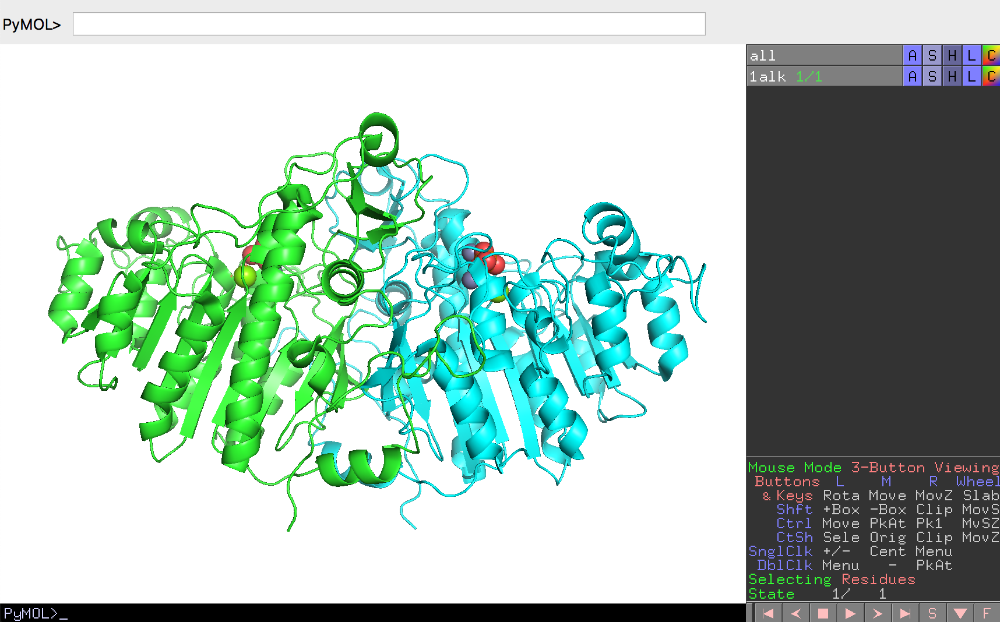続いて、この構造を上の表で登場したアミノ酸の親水性・疎水性基準に従って、アミノ酸の側鎖を色分けしてみます。親水性のアミノ酸（表で0以下の値を持つアミノ酸）をすべて水色に、疎水性アミノ酸をすべてオレンジ色に塗ってみます。このとき、すべてのアミノ酸をマウスで選ぶのは大変なので、PyMOLのコマンドラインを活用します。
PyMOLソフトウェアのPyMOL>と書かれている欄にまずselect hydrophobic,(resn ala+cys+gly+val+ile+leu+phe+pro+met+trp+tyr)と入れてEnterキーを入力すると、疎水性アミノ酸たちがhydrophobicという名前の選択範囲が保存されます。この後、この選択範囲をオレンジ色にするためにcolor orange, hydrophobicというコマンドを入力します。同様にして、すべての親水性アミノ酸をhydrophilicという名前の選択範囲として登録しておき、これをシアン色に色付けします。最後に、これらのアミノ酸残基の体積を強調するためにSphere表示にしてみます。
以上のコマンドは
# 疎水性残基をhydrophobicという名前の選択範囲として保存
select hydrophobic,(resn ala+cys+gly+val+ile+leu+phe+pro+met+trp+tyr)
# 選択範囲hydrophobicをorange色にする
color orange,hydrophobic
# 親水性残基をhydrophobicという名前の選択範囲として保存
select hydrophilic,(resn arg+asn+asp+gln+glu+his+lys+ser+thr)
# 選択範囲hydrophilicをcyan色にする
color cyan, hydrophilic
# すべての残基をsphere表示にする
show spheres, all
と打っていくことで達成されます。
このように色付けをしてみると、大腸菌アルカリホスファターゼの表面には親水性の残基が比較的多く分布していることがわかります。
ここで、PyMOLのマウス機能の1つであるSlabを使ってタンパク質の中を覗いてみます。Slabはマウスのホイールを回転させて行います（Macbookなどに付属しているタッチパッドで行う場合は、タッチパッドに2本指を置いて上下に動かします）
すると、アルカリホスファターゼのタンパク質構造の内部には疎水性アミノ酸がとても密に詰まっていることがわかると思います。その一方で、表面にはやはり親水性アミノ酸が分布していることから、タンパク質構造の外側には親水性アミノ酸が、内側には疎水性アミノ酸がそれぞれ分布していることがわかります。
このことはアルカリホスファターゼに限らず他の多くのタンパク質についても一般に成立します。ただこのアミノ酸の分布は親水性・疎水性アミノ酸の性質からすると当然のことを言っているに過ぎないと思われるかもしれません。しかしながら、これらの大きな疎水性アミノ酸のかたまり、通称疎水性コアは、タンパク質構造を安定に保つために重要な役割を果たしています。
水溶液中で安定に存在できる球状タンパク質は、疎水性アミノ酸が周囲の水分子と反発することによって親水性アミノ酸を外側へ、疎水性アミノ酸は内側へ集中させることから生まれる疎水性相互作用によって構造を形成していくことが知られています。そしてこの疎水性コアは疎水性アミノ酸同士の側鎖が密にパッキングすることによって文字通り隙間なく形成されており、これによってタンパク質全体の構造の安定性を大きく伸ばすことに貢献しています。タンパク質構造で注目されがちなのは親水性アミノ酸がよく用いられ外側に露出している活性部位（大腸菌アルカリホスファターゼで言うところのSer102, Arg166周辺）なのですが、こうした構造の成り立ちに関わるアミノ酸の分布のことも重要であることを覚えておくと、タンパク質構造についての理解がより深まると思います。
補足ですが、タンパク質アミノ酸を疎水性・親水性に応じて色分けを行うための拡張コマンドとしてcolor_h, color_h2が存在します（https://pymolwiki.org/index.php/Color_h）。color_h, color_h2コマンドの使い方はPyMOL上でのpythonスクリプトの実行を参考にしてみてください。
タンパク質の位置依存的なアミノ酸保存度の違いを理解する
これまで見てきたように、タンパク質の内部は疎水性アミノ酸で充填されており、外側には水に溶けやすい親水性残基を露出することで水溶液中に存在しているというのがタンパク質の構築原理でした。一方、タンパク質は構造を保つだけでなく、リガンドを結合したり、化学反応を触媒したりする機能を持つことが生体内で特に重要です。言い換えれば、タンパク質は限られた20種類のアミノ酸をうまく使い分けることで、内部構造を保ちつつ、そして機能も発現させなければならないという二面性を持っています。
しかし、タンパク質を使って生きている生物というものは不思議なもので、すでにヒトと大腸菌のアルカリホスファターゼで見てきた通り、同じ機能を持つタンパク質であっても、それを構成しているアミノ酸配列を調べてみると、配列間の相同性が2〜3割しかないということもよく見られます。これは一体どういうことでしょうか？
以上のことを、アルカリホスファターゼについて確認してみましょう。まずは、PDBsum (https://www.ebi.ac.uk/thornton-srv/databases/cgi-bin/pdbsum/GetPage.pl?pdbcode=index.html) というデータベースに登録されているデータを用います。PDBsumはPDBに登録された生体分子の構造データを加工したデータベースの1つで、配列・構造情報・リガンド結合・文献情報などをわかりやすくまとめてあります。ここのトップページのフォームに、調べたいPDBデータのIDを入れてFindボタンを押します。

すると、PDB ID: 1ALKについてのページに移ります。このトップページには構造の図とともに、タンパク質の分類・リガンド情報・化学反応・一次文献情報・この構造を引用している論文一覧……などが表示されています。

さらに、上部にあるタブをクリックすることで、さらに他の詳細な情報を表示させることができます。ここではProteinタブをクリックしてみましょう。

Proteins タブ、ページ左側にあるMotifsメニューのSecondary structure, Residue conservationをクリックすると（上図の赤丸部分）、アミノ酸の生物種間での保存度が1つずつカラーリングされているページが現れます。


この1文字表記のアミノ酸配列を見てみると、青〜緑〜黄〜赤までのカラーリングがなされていることに気づくと思います。このカラーリングはこの大腸菌アルカリホスファターゼの類縁配列上で、そのアミノ酸の位置がどれほど保存されているかを表しています（ページ下部に説明が書かれてあります）。言い換えれば、大腸菌アルカリホスファターゼについて他の類縁配列とのマルチプルシーケンスアライメントを作成してみたとき、ある位置のアミノ酸の種類が他の類縁配列上でも同じであればその位置のアミノ酸の保存度は高く、逆に他の類縁配列上でバラバラな様子が観測されていればその位置のアミノ酸の保存度は低くなります。例えば、この大腸菌アルカリホスファターゼのcatalytic residueであるSer102, Arg166のアミノ酸の保存度は最も高い9で示されています。この他にも、PDB SITE records（※なにかのリガンドが結合しているアミノ酸につくレコード）のマークが付いているアミノ酸はいずれも高い保存度を示していることが見て取れます。しかし、大腸菌アルカリホスファターゼのアミノ酸配列全体を見渡してみると、他にも保存度が高いところがあるのが伺えますし、逆に保存度が低いアミノ酸はなぜ低くなっているのか、という疑問も残ります。
そこでこの疑問を考察するために、これからこの保存度の情報をPyMOLで表示させた大腸菌アルカリホスファターゼ構造の上に表示させてみます。
先程のResidue Conservationのページの下の方を見ると、この保存度はConsurf-DBというデータベースに保存されてあります（https://consurfdb.tau.ac.il/ ）。このページにアクセスして、大腸菌アルカリホスファターゼのPDB IDとChain IDを以下の画像のように入力してみましょう。

すると、まもなくPDB: 1ALKについての保存度情報についてのページに遷移します。ここで、下の方にあるHigh Resolution Figuresのところから、PyMOLの方のマークをクリックして、PyMOLのセッションファイル（consurf_pymol_session.pse）をダウンロードします。

このダウンロードしてきたファイルをPyMOLで開いてみましょう。

ここで、保存度のカラーリングはChain Aのみに行われており、Chain Bについては情報が存在していないためグレー表示となっていることに注意してください。
このダウンロードしてきた構造をPyMOL上で様々な角度から眺めていると、タンパク質構造の内側は保存度が高く、外側は保存度が小さいことに気付かれると思います。これは偶然ではなく、前項のタンパク質の疎水性親水性残基の分布を確認するで確認した通り、タンパク質構造の内部は疎水性アミノ酸によって隙間なく密にしておくことで、タンパク質構造を安定に支えておく必要があるからです。つまり、内部を支えるアミノ酸が不用意に別のアミノ酸に変化してしまうと構造を支えられなくなって機能を保てなくなってしまいます。また構造の外側に位置するアミノ酸であっても、活性残基、およびその周辺の残基は特に保存されていることがわかります。これはもちろんタンパク質の機能を直接担う責任重大なアミノ酸だから、と考えることができます。反対に、外側に露出しているアミノ酸はある程度どのアミノ酸を使ってもタンパク質構造全体の安定性という観点からすると大きな問題ではないため、アミノ酸の保存度が低くても機能に支障が出ないというわけです。
タンパク質はその機能を失わず、かつ構造を安定に保つという最低限の目的さえ果たせれば、そのアミノ酸配列はある程度自由に構成することができます。アルカリホスファターゼの例で言えば、リン酸モノエステル化合物を加水分解するという機能を損なわず、かつタンパク質全体の構造が壊れなければ、そのアミノ酸配列はある程度許容されることになり、長い進化の課程で大腸菌やヒトのものといった様々なバリエーションが生まれていったと考えることができます。
アルカリホスファターゼの加水分解酵素としての働き
最後に、アルカリホスファターゼが「ホスファターゼ」の名前通りにリン酸モノエステル加水分解酵素として化学的にどう働いているかを観察してみましょう。
アルカリホスファターゼ（ALP）は以下の反応式のように、p-ニトロフェニルリン酸を加水分解してp-ニトロフェノール（黄色く発色する）を生成することができます。
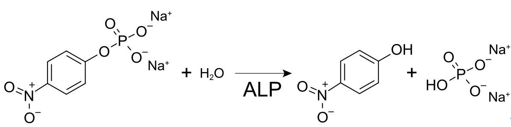この反応の様子をPyMOLで見てみましょう。
このリンクに1alk_reaction.pseという名前のPyMOLセッションファイルを置いています。これをダウンロードしてダブルクリック、またはFile -> Openからこのファイルを開いてみましょう。このセッションファイルにはアルカリホスファターゼの単量体とともに、今まで無機リン酸が入っていた箇所にp-ニトロフェニルリン酸（残基名：NPH）の構造が見えるはずです。
PyMOL Internal GUIの右下には▶ボタンがあります。この▶ボタンを押すとタンパク質とp-ニトロフェニルリン酸が少しずつ動き、化学反応を起こしている様子が可視化されて見えるはずです。
このような動いている様子が見られるのは、このセッションファイルにはあらかじめ149フレーム分の構造データを入れたオブジェクトが含まれているからです。ほとんどすべてのRCSB PDBからダウンロードしてきた結晶構造のデータは静止しているために1フレーム分のデータしかありませんが、NMRで構造決定されたデータですと、タンパク質の「動き」が収録されているものもあります（例としてPDB ID: 1G03）。
このセッションファイルには、dist01からdist11までの距離オブジェクトも含まれています。この距離オブジェクトはマウス操作の原子ピッキング（PkAt）機能を用いることで作成することができます。距離を測定したい2点の原子の上でそれぞれCtrlキーを押しながらマウスのホイールクリックを行い、コマンドでdistと入力することで距離オブジェクトを生成することができます。